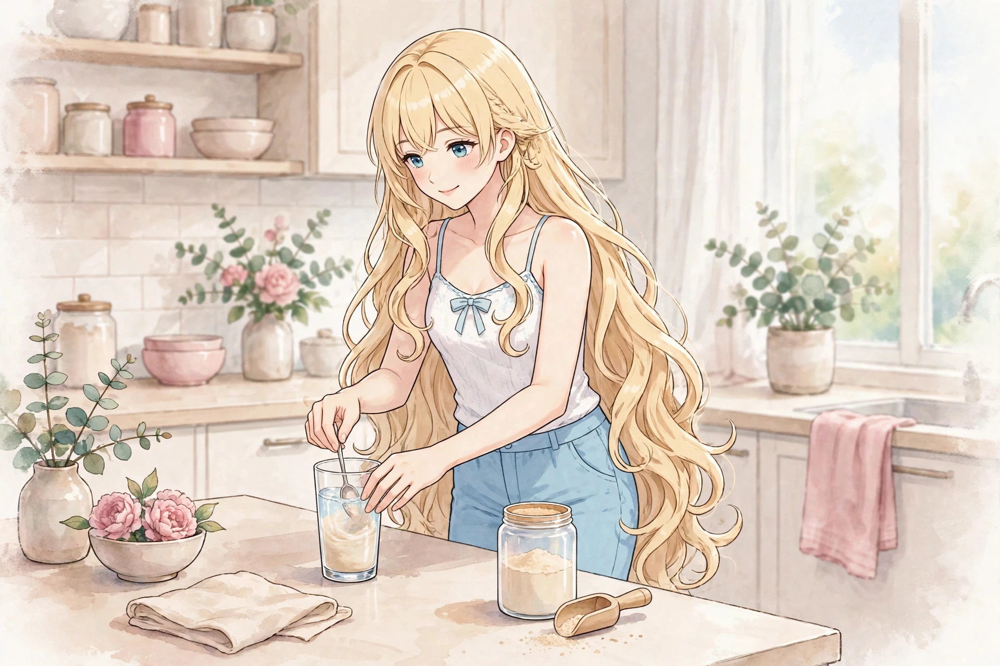

トップ ＞ インナーケア・サプリ ＞ 粉末・ドリンクタイプの飲み方の工夫
粉末・ドリンクタイプの飲み方の工夫

サプリメントには、粒タイプのほかに、水に溶かして飲む粉末・ドリンクタイプがあります。お客様との会話でも「粉っぽさが残って飲みにくい」「作るのが面倒で続かない」という声を聞きます。この記事では、表示の確認と、飲む手順の工夫を整理します。
水の量と温度は、表示の案内を基準に
粉末タイプには、「水◯mLに溶かして」といった案内が書かれているのが普通です。水の量が多すぎると薄くて飲みにくく、少なすぎると溶け残ります。まず表示の量を守って作り、自分の飲みやすい範囲で微調整するのが基本です。
温度についても、お湯でよいのか、水で溶かすのかが表示に書かれている場合があります。迷ったら、パッケージの「お召し上がり方」の欄を確認してください。表示が、その商品の前提条件です。
粉っぽさを残さない手順
溶け残りを防ぐコツは、順番です。コップに粉を入れてから水を注ぐより、先に少量の水で粉を練るように溶かし、その後で残りの水を足すと、ダマになりにくくなります。シェイカーがあると、振るだけで均一になり、手間も減ります。
飲むタイミングは、食事の流れに組み込むと忘れにくくなります。朝食の飲み物と置き換える、帰宅後の着替えの後に作る、といった具合に、既存の習慣にくっつけるのが続け方のコツです。
作り置きはせず、その場で作る
溶かした後のドリンクは、作り置きをしないのが管理の基本です。作ったその場で飲み切る分量だけを用意します。個包装タイプは、1回分が区切られているので、外出先でも作りやすく、量の管理もしやすくなります。
大袋タイプを持ち運ぶ場合は、清潔な小分け容器に数回分だけを移し、移した日付を書いておくと管理がぶれません。
形の選び方にも触れておきます。個包装タイプは、1回分が区切られているため、外出先や職場でも作りやすく、量の管理が簡単です。大袋タイプは、割安なことが多い反面、計量の手間と、開封後の管理が要ります。自宅で決まった時間に作る習慣がある方は大袋、場面が変わりやすい方は個包装、というように、生活の形から選ぶと失敗が少なくなります。味の好みも続ける力に直結します。溶かす相手は水が基本ですが、表示の範囲で、自分の飲みやすい形を探すことも、無理なく続ける工夫のひとつです。
サプリメントは食品であり、身体への作用を断定するものではありません。1日の目安量は表示を確認し、体調に不安がある場合は医師・薬剤師等の専門家にご相談ください。

セラフィナ「粉末は、先に少量の水で練ってから足すのがコツ。作り置きはせず、その場で作ろう」